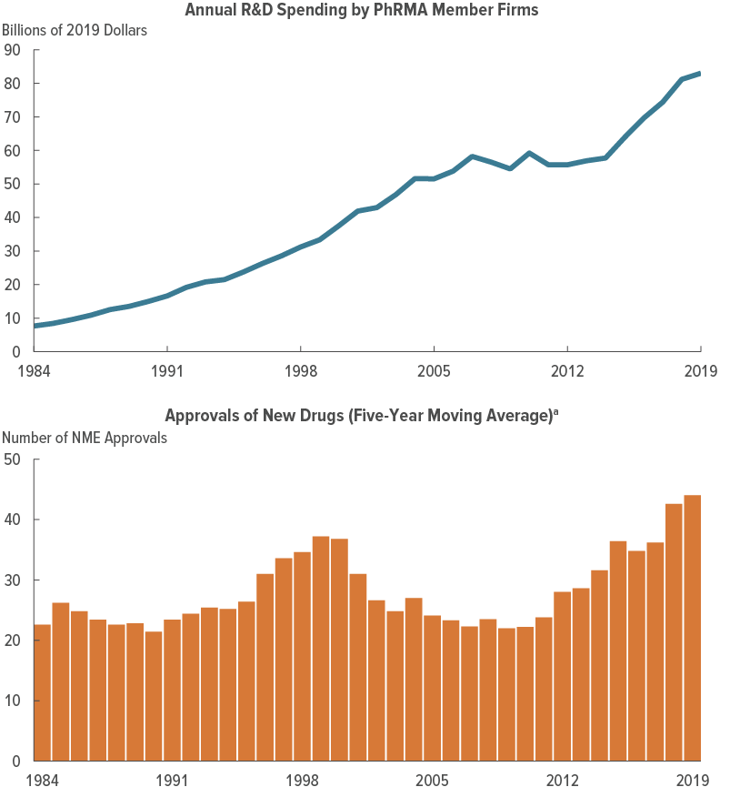
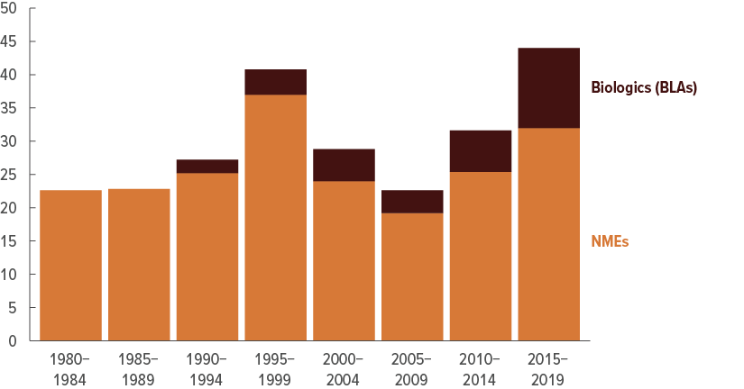

Introduction to Prescription Drugs
Pharmaceutical Spending
High spending per person

Source: CBO Report on Pharma Spending
Prescription Drug Life Cycle
Three Broad Stages
- Research and Development
- Marketing
- Sales
Research and Development
R&D Timeline
- 10-15 years from discovery to manufacturing
- Discovery: screening, target identification, pre-clinical testing
- < 5% of candidate compounds make it to pre-clinical testing
- Clinical Trials: official testing for FDA approval (up to 10 years total)
Clinical Trials
- 20% of drugs in pre-clinical discovery make it to clinical trials
- Pre-clinical: submission of investigational new drug application (IND)
- Phase I: testing on healthy, human volunteers, focus on side effects
- Phase II: testing on relevant patient population, focus on efficacy
- Phase III: testing on large patient population, focus on safety and efficacy
- FDA review and approval, submission of new drug application (NDA)
FDA Approval
- Physicians can prescribe drugs for off-label uses, without FDA approval
- FDA approval is required for marketing and insurance coverage
- FDA approval can be narrow, and generally does not cover all uses
- Companies often continue clinical trials after approval to expand uses
R&D Spending

Source: CBO Report on R&D Spending
New Drug Approvals

Source: CBO Report on R&D Spending
Marketing
Marketing Expenditures

Marketing Expenditures
- About $6 billion per year on direct-to-consumer advertising (primarily TV and magazine), based on 2018 data
- Nearly 3x that on detailing (sales reps visiting physicians), based on 2008 data
- Over $20 billion per year on free samples, based on 2005 data
Sales
Supply chain (relatively standard)
- Manufacturers (that’s easy)
- Sell to wholesalers (e.g., McKesson, Cardinal Health, AmerisourceBergen) in most cases (60-70%) or directly to pharmacies (mainly large chains)
- Sell to retail and non-retail (e.g., hospitals, nursing homes, home health care) pharmacies
- Sell to patients
Flow of money (non-standard)
- Manufacturers set list prices
- Wholesalers negotiate discounts and rebates, sell to pharmacies at a markup
- Pharmacy benefit managers (PBMs) administer formularies and negotiate discounts and rebates with manufacturers and insurers
- Pharmacies sell to patients at a markup
What is the price?
- Insurers pay PBMs to manage drug benefits
- Manufacturers pay rebates to insurers and pharmacy benefit managers (PBMs)
- Medicaid has mandatory rebates (over 20% of wholesale price)
- For brand name drugs, rebates are sizeable and opaque. Hard to know what the price is.
Factors affecting price
- Manufacturer market power
- Patent protection provides monopoly power for 20 years, applied for during discovery period
- 10 years of effective monopoly power given R&D and approval time
- Product differentiation
- Regulation and price controls
- Physician agency (already covered)